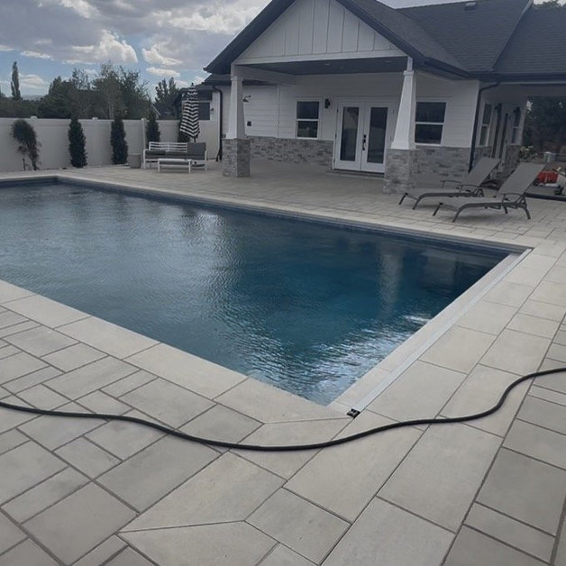
Nov 12
What a landscape design costs in Utah County, what you get with 2D vs 3D, and when a design plan pays for itself (and when you can honestly skip it).
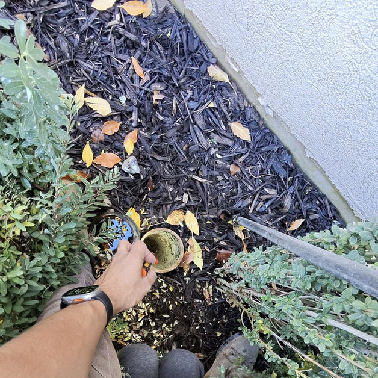
Oct 27
Fall in Utah County is beautiful, but water left sitting in your sprinkler system when the first hard freeze arrives can crack pipes, valves, and your backflow preventer. You usually won't find the damage until spring. The good news: winterizing a residential sprinkler system is a simple process once you know your parts. This guide covers two approaches: a basic method that drains the most exposed parts, and the standard method that also blows the remaining water out of every
Oct 22
If you live in Lehi, there's a good chance your yard isn't perfectly flat. Newer neighborhoods near Traverse Mountain, homes along the foothills, and lots that step down toward the street all share the same challenge: a slope that's hard to mow, hard to plant, and hard to enjoy. A well-built retaining wall fixes that. It holds back soil, controls erosion, and turns an awkward hillside into level ground you can actually use for a patio, lawn, garden, or play area. This guide w
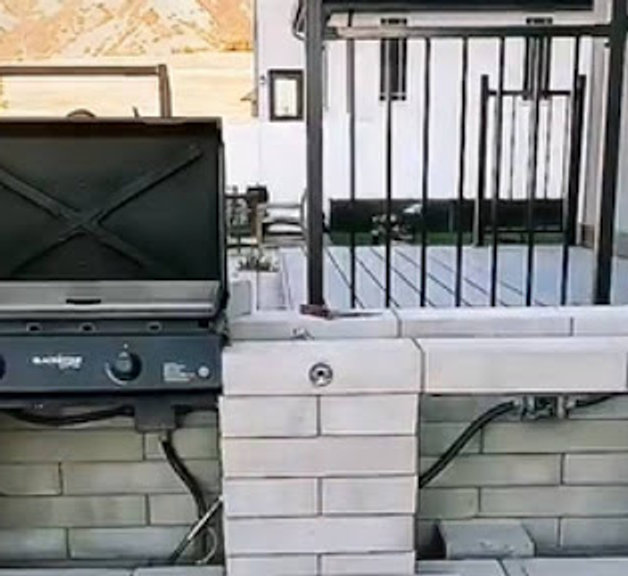
Nov 18, 2024
An outdoor kitchen should be at least 10 feet from the house for safety, with an ideal distance of 15 to 20 feet for convenience and easy access to the indoor kitchen. When creating your ideal outdoor kitchen, one of the most important considerations is its distance from your house. This decision impacts safety, convenience, aesthetics, and the overall functionality of your outdoor space. Whether you’re grilling, hosting gatherings, or relaxing outdoors, the placement of you
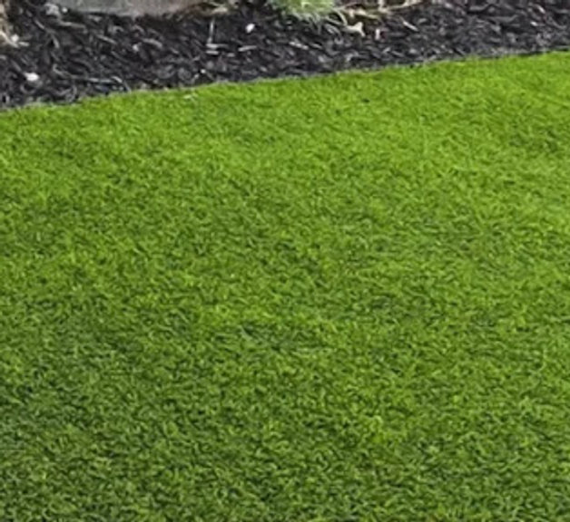
Oct 18, 2024
To install artificial turf, first, prepare the area by removing existing materials and leveling the soil. Next, add a 3-inch layer of crushed stone for drainage and compact it. If desired, lay a weed barrier. Acclimatize the turf by leaving it in the sun, then roll it out and cut to size. Secure the turf with non-galvanized nails and ensure seams are tight. Add infill material to weigh down the turf and keep the blades upright. Finally, groom the turf with a broom, clean up a
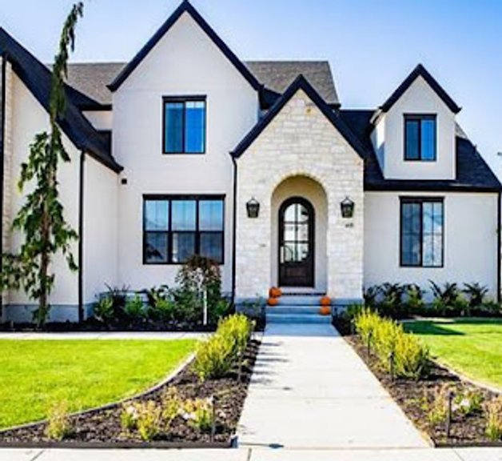
Oct 3, 2024
The artistry of landscape design combines nature and human creativity to create visually appealing and functional outdoor spaces. By...
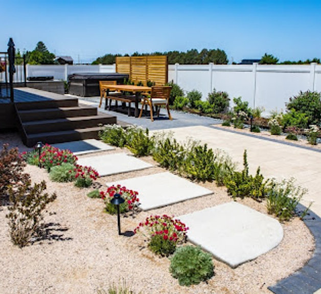
Sep 23, 2024
Xeriscaping is a landscaping method that is both beautiful and environmentally friendly, as it uses drought-resistant plants and...
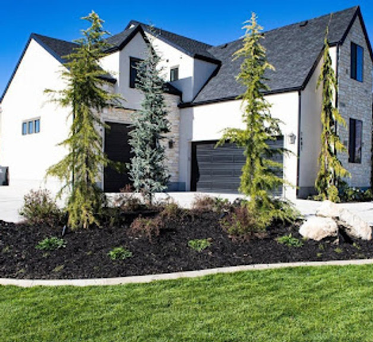
Sep 23, 2024
A berm in landscaping is a raised mound of soil designed to enhance visual appeal, improve drainage, provide privacy, or serve as a barrier to noise and wind. In the world of landscaping, a berm is more than just a mound of earth. It serves both functional and aesthetic purposes, transforming flat or uninspiring landscapes into dynamic and engaging outdoor spaces. Berms are versatile elements that can enhance privacy, manage drainage, and add visual interest to your property.
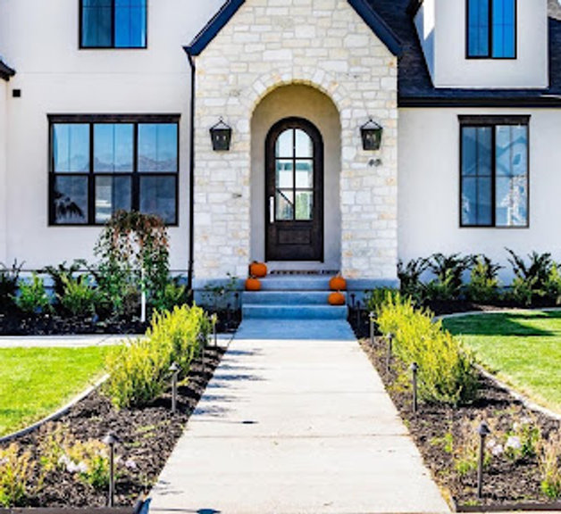
Sep 23, 2024
Common plants used in landscaping include shrubs like boxwood and hydrangeas, flowering plants such as roses and lavender, ornamental...
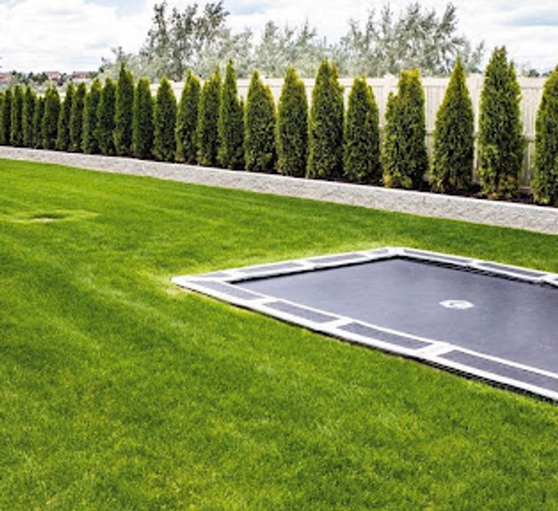
Sep 23, 2024
Artificial turf can positively affect property value by enhancing curb appeal, reducing maintenance costs, and providing a lush, green...
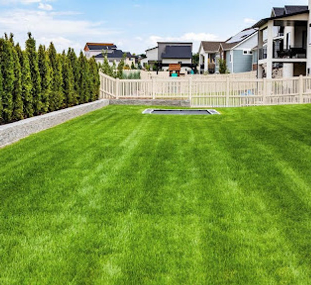
Sep 23, 2024
To choose pet-friendly artificial turf for your yard, opt for a durable, non-toxic turf with good drainage to manage pet waste, and...
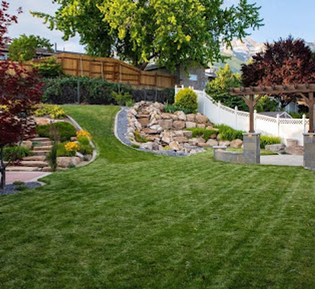
Sep 23, 2024
When designing landscaping for various soil types, select plants according to soil characteristics: opt for drought-tolerant plants in...
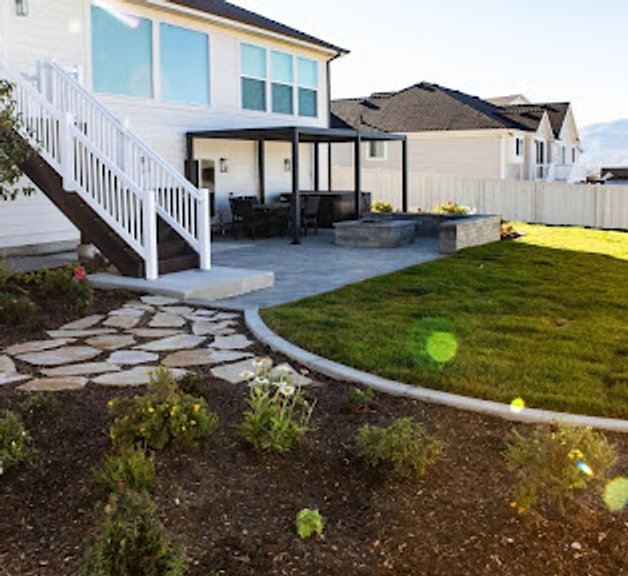
Sep 23, 2024
Eco-friendly landscaping practices involve selecting native plants, setting up rainwater harvesting systems, applying mulch to conserve...
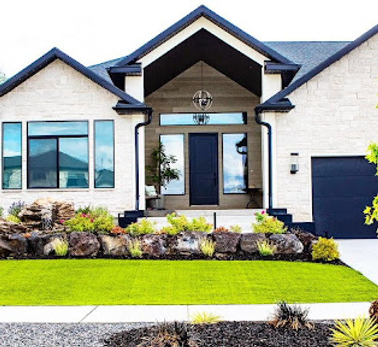
Sep 6, 2024
For small yards, make the most of vertical space with trellises and hanging planters. Choose multifunctional furniture to conserve space....
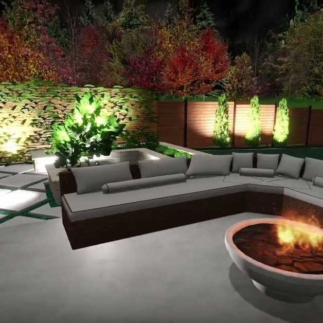
Aug 21, 2024
The key parts of good landscaping design include careful planning, choosing plants that fit the local climate, creating focal points,...
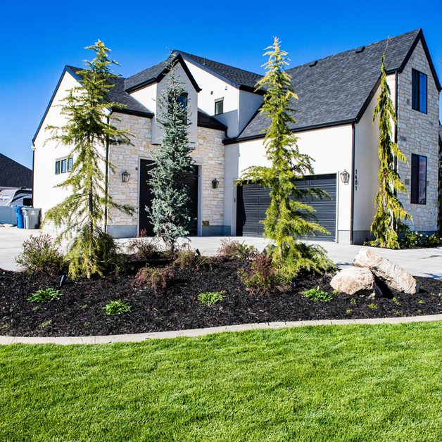
Jul 12, 2024
The ideal time for landscaping varies based on your location and the tasks at hand. Generally, early spring and fall are preferred due to...
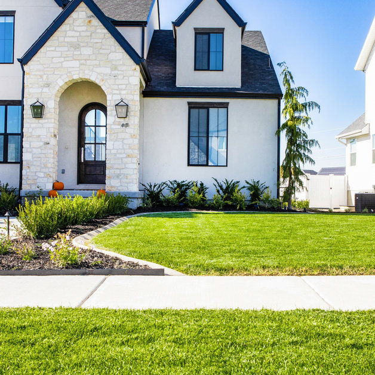
Jul 5, 2024
Yes, landscape design can significantly help with drainage and erosion control. Proper landscape planning and implementation can address...
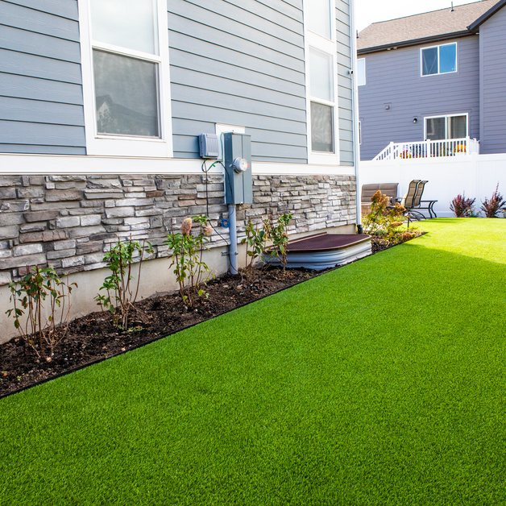
Jun 27, 2024
Artificial turf typically lasts between 15 to 25 years, depending on factors such as quality of installation, level of foot traffic, and...
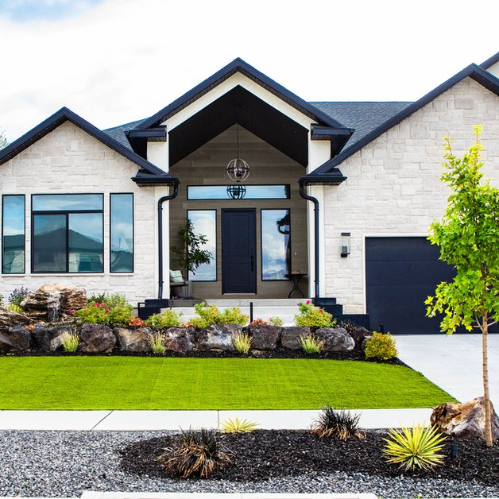
Jun 21, 2024
You can make your landscaping more pet-friendly by selecting non-toxic plants, establishing designated play areas, securing the...
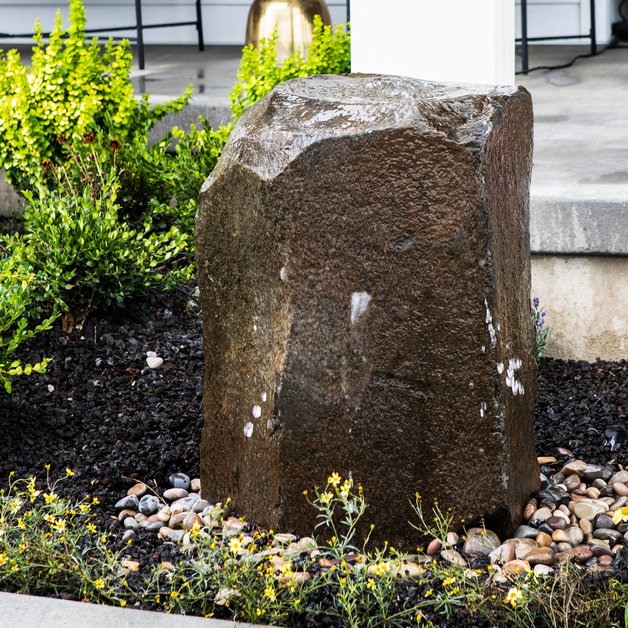
Jun 14, 2024
The duration of a landscaping project can vary significantly based on several factors, including the scope of work, weather conditions, and the availability of materials and labor. Generally, a standard landscaping project can take anywhere from a few days to several weeks to complete. In the realm of landscaping, time is often a critical factor. Homeowners eager to transform their outdoor spaces wonder, "How long will it take to see the finished result?" Let's delve into thi
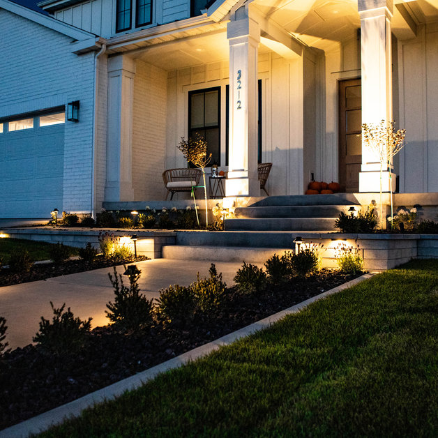
Jun 7, 2024
Yes, landscaping can boost energy efficiency for your home or business by offering shade, minimizing heat absorption, and serving as...
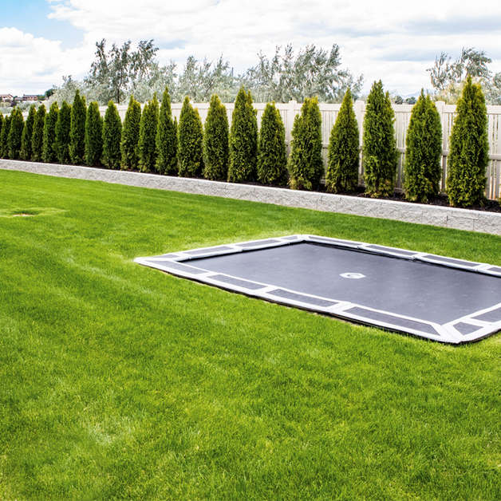
May 31, 2024
Create privacy in your backyard with landscaping by planting tall trees, shrubs, or hedges along property lines, installing privacy...
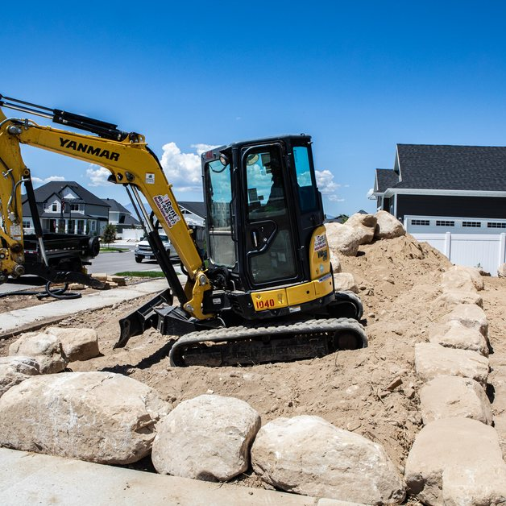
May 24, 2024
When planning a landscaping project, consider factors such as your budget, desired aesthetic, maintenance requirements, local climate,...
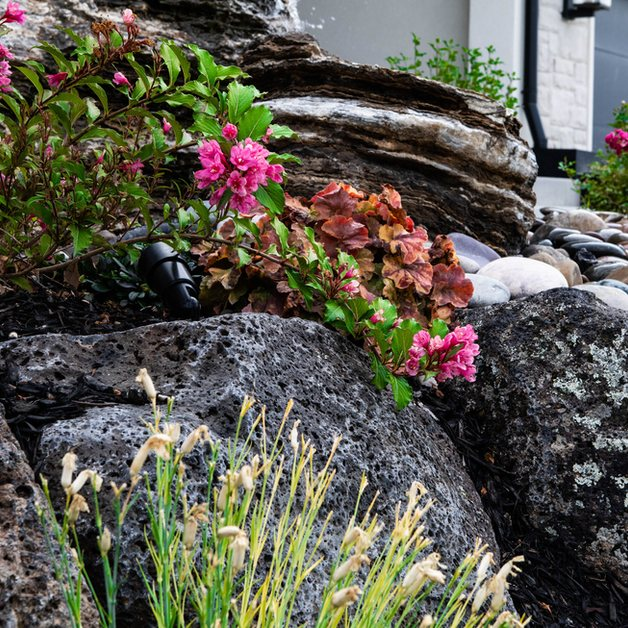
May 17, 2024
To select the right plants for your landscaping, consider factors such as your local climate, soil conditions, sun exposure, and desired...
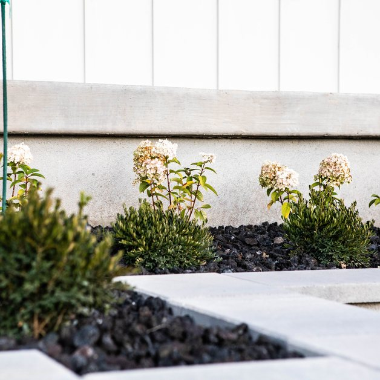
May 10, 2024
Landscaping typically involves the design and installation of living elements such as plants, trees, and grass, focusing on creating...
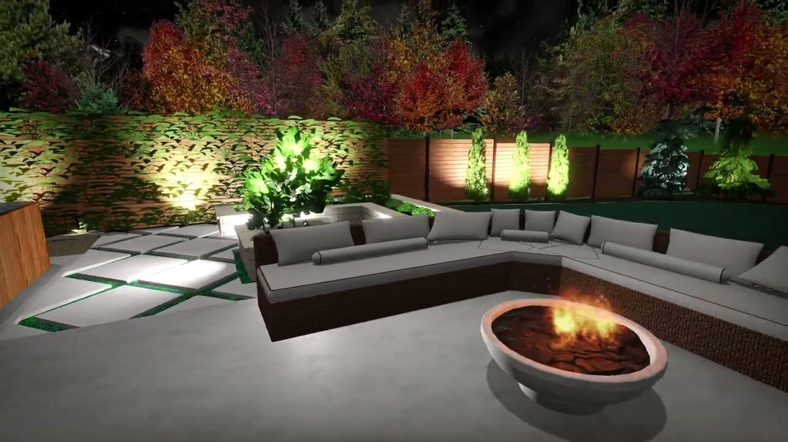
Feb 27, 2024
We believe that every great landscape project begins with a clear vision. That's why we're excited to showcase some of our stunning 3D...
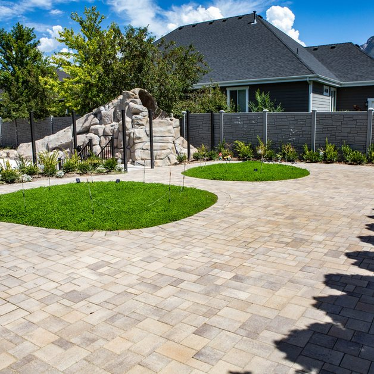
Feb 26, 2024
At Ironhills Landscaping, we love nothing more than bringing our clients' visions to life – especially when it involves creating a...
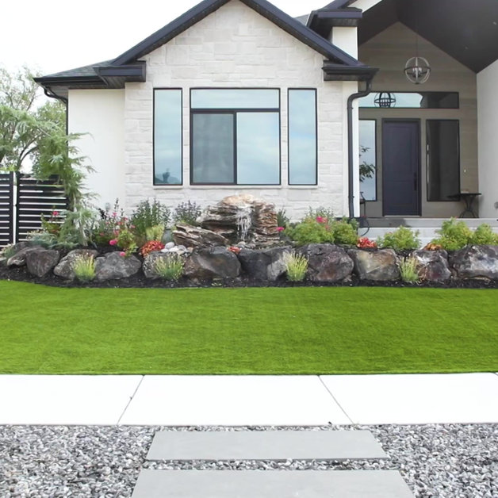
Feb 26, 2024
At Ironhills Landscaping, we believe that every outdoor space has the potential to be a masterpiece. Recently, we had the opportunity to turn this belief into reality with a front yard transformation that has become the talk of the neighborhood. Our clients approached us with a vision for their front yard – they wanted something that would not only stand out but also serve as a source of pride and joy for years to come. With this in mind, our team set out to create a landscap
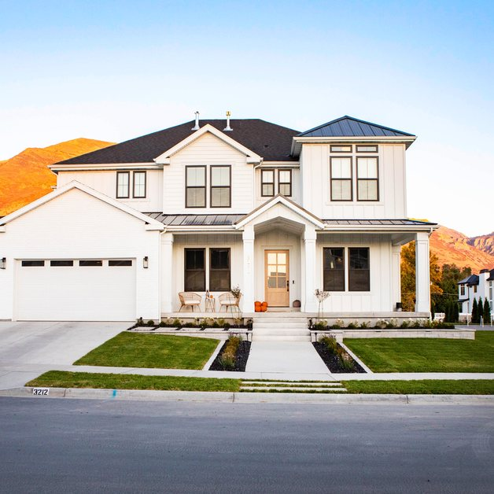
Feb 26, 2024
We recently had the pleasure of working on a new build in a residential area, and the results were nothing short of spectacular. Our...
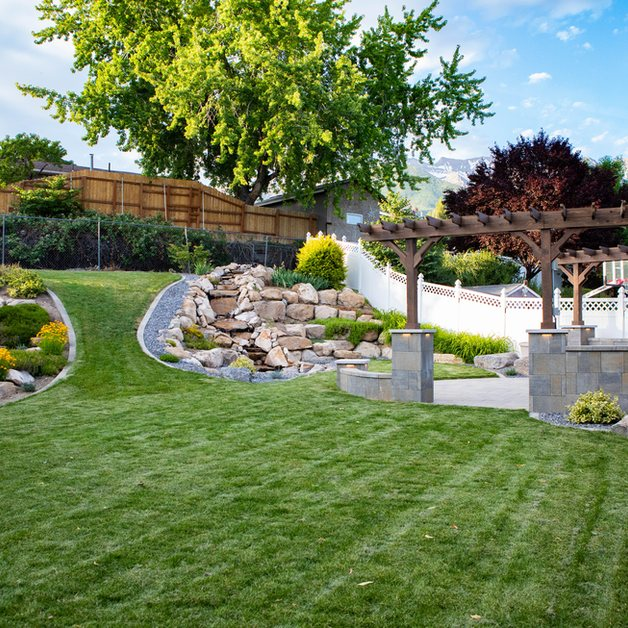
Feb 19, 2024
Recently, we had the pleasure of working with a client who wanted a complete makeover for her yard. She wanted her space to be the go-to spot for gatherings and also wanted a little cozy garden nook to go out and enjoy. We sat down with our client and got to know her style and preferences. Together, we dreamed up a plan that would turn her yard into a haven of relaxation and entertainment, with a touch of natural beauty thrown in. From lush gardens to cozy corners, we mapped
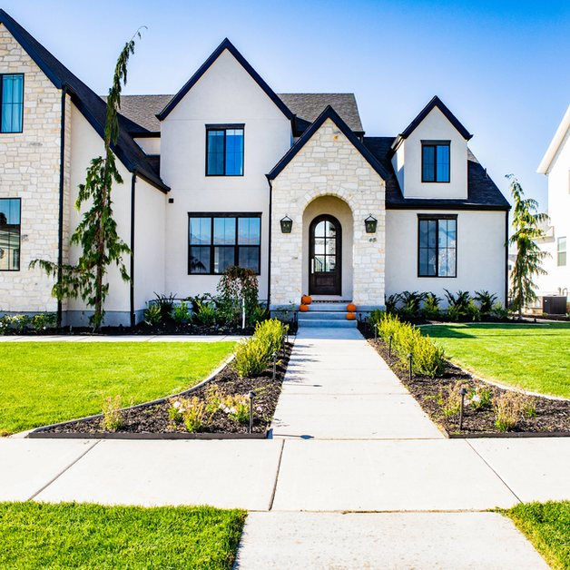
Feb 5, 2024
Customized Touches Attention to detail is our forte, and this project was no exception. We integrated personalized touches, such as strategically placed flower beds with European-inspired flora, enhancing the overall theme. The result is not just a backyard but a curated outdoor experience that transports our clients to the heart of European elegance. Check out our Before and After Transformation Reveal pictures below! While the aesthetics capture attention, functionality rem